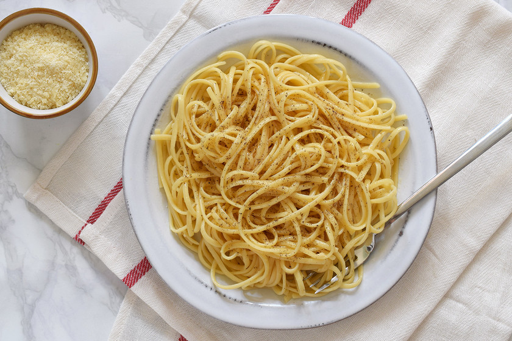

Pasta

The most recognized history of pasta is attributed to the discovery of Marco Polo in the thirteenth century,
who introduced it to Italy back from one of his trips to China, in 1271. ... Therefore, fresh pasta was used and
appreciated in Italy since the time of the Etruscans and the Romans.
ingredients:
- 1 (16 ounce) package fresh linguine pasta
- 1 tablespoon olive oil
- 1 pound shrimp, peeled and deveined
- 1 teaspoon salt
- 1 teaspoon ground black pepper
- 1 lemon, zested and juiced
- 2 tablespoons chopped fresh parsley
- 2 tablespoons butter
- 1 cup freshly grated Parmesan cheese
steps:
- Bring a large pot of lightly salted water to a boil.
- Meanwhile, heat oil in a pan over medium heat. Coat shrimp with salt and pepper. Cook and stir shrimp in the
hot oil until opaque, about 2 minutes per side.
- Cook linguine in the boiling water until tender yet firm to the bite, 1 to 3 minutes.
- Combine lemon zest and juice in a small saucepan over medium heat and bring to a simmer. Sprinkle in parsley
and stir in butter until melted. Add 2 tablespoons of the pasta cooking water and stir. Drain pasta. Add
shrimp to the lemon sauce. Mix pasta, shrimp, sauce, and Parmesan cheese together in a large serving bowl.